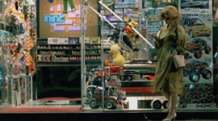
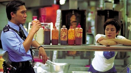
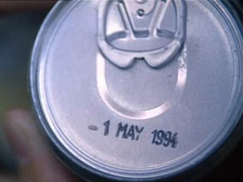
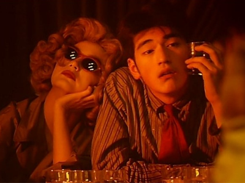

줄거리 소개
《중경삼림》은 홍콩의 복잡한 도심 속에서 외로움과 사랑을 겪는 두 남자의 이야기를 그린다.
첫 번째 에피소드에서는 이별에 상처받은 경찰 223번이 정체불명의 마약밀매 여성과 우연히 만난다.
두 번째 에피소드에서는 여자친구에게 이별을 통보받은 경찰 663번과, 그를 짝사랑하는 가게 점원 페이의 관계가 천천히 흘러간다.
각자의 상처와 고독 속에서, 인물들은 짧지만 강렬한 만남을 통해 조금씩 변화해간다.
왕가위 감독은 몽환적인 영상미와 감성적인 음악을 통해 도시 속의 고독과 사랑의 순간을 섬세하게 포착한다.
배우소개
🕵️♂️ 첫 번째 이야기
경찰 223번: 하직우 (何志武, He Zhiwu) — 배우: 금성무
마약 밀매 여성: 이름 없음 (극 중 실명 미공개) — 배우: 임청하
🕵️♂️ 두 번째 이야기
페이 (Faye): 패스트푸드점 직원 — 배우: 왕페이
경찰 663번: 이름 없음 (극 중 실명 미공개) — 배우: 양조위
- 
-

- 
스틸컷
- 
- 